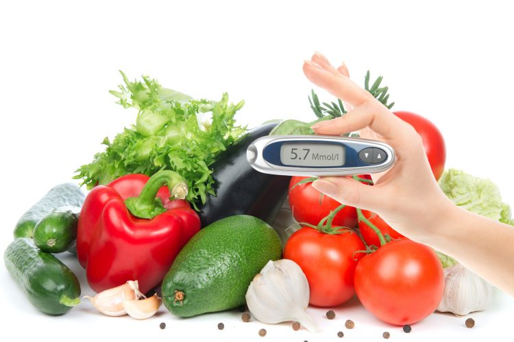

Cómo reunir todo en un solo lugar: crea un plan
Hay algunos enfoques diferentes a fin de crear una dieta para la diabetes que te ayudarán a mantener tu nivel de glucosa en sangre dentro de los límites normales. Con la ayuda de un dietista, es posible que uno de los siguientes métodos, o una combinación de ellos, pueda ser útil para ti:
- El método del plato. La Asociación Americana de la Diabetes ofrece un método simple de siete pasos para la preparación de comidas. Se enfoca básicamente en comer más vegetales. Al preparar tu plato, llena una mitad de él con vegetales sin almidón, como espinaca, zanahorias y tomates. Llena un cuarto del plato con proteínas, como atún o carne magra de cerdo. Llena el último cuarto libre del plato con un alimento a base de granos integrales o de almidón. Agrega una porción de fruta o un producto lácteo y un vaso de agua o taza de té o café sin endulzar.
- Recuento de carbohidratos. Debido a que los carbohidratos se convierten en glucosa, tienen una fuerte repercusión en el nivel de glucosa en sangre. Para controlar el azúcar en la sangre, consume aproximadamente la misma cantidad de carbohidratos todos los días, en intervalos regulares, en especial, si tomas insulina o algún otro medicamento para la diabetes.
Un dietista puede enseñarte a medir tus porciones de comidas y a convertirte en un buen lector de información nutricional que presta especial atención al tamaño de las porciones y el contenido de carbohidratos. Si usas insulina, el especialista puede ayudarte a contar la cantidad de carbohidratos de cada comida o tentempié y a ajustar tu dosis de insulina en consecuencia.
- El sistema de listas de intercambio. Un dietista puede recomendarte hacer listas de intercambio de comidas para ayudarte a planificar tus comidas y tentempiés. Las listas se organizan por categorías, como carbohidratos, fuentes de proteínas y grasas.
Una porción en una categoría es una «elección». Una elección de alimentos tiene aproximadamente la misma cantidad de carbohidratos, proteínas, grasa y calorías, así como el mismo efecto en el nivel de glucosa en la sangre, que una porción de cada uno de los otros alimentos de esa misma categoría. Así que, por ejemplo, podrías elegir comer la mitad de una mazorca de maíz grande o 1/3 de taza de pasta cocida para una de las elecciones con almidón.
- Índice glucémico. Algunas personas que tienen diabetes usan el índice glucémico para seleccionar alimentos, en especial, los carbohidratos. Este método clasifica los alimentos que contienen carbohidratos según su efecto en los niveles de glucosa en la sangre. Consulta con tu dietista si este método podría ser efectivo para ti.

Menú de muestra
Cuando planifiques las comidas, ten en cuenta tu tamaño y nivel de actividad. El siguiente menú está diseñado para aquellas personas que necesitan de 1200 a 1600 calorías por día.
- Desayuno. Pan de trigo integral (1 rebanada mediana) con 2 cucharaditas de mermelada, 1/2 taza de cereales de trigo molido con una taza de leche con bajo contenido de grasa al 1 por ciento, una fruta, café
- Almuerzo. Queso y pan árabe de vegetales, una manzana mediana con 2 cucharadas de mantequilla de almendras, agua
- Cena. Salmón, 1 1/2 cucharadita de aceite vegetal, una papa horneada pequeña, 1/2 taza de zanahorias, ensalada de guarnición (1 1/2 tazas de espinaca, 1/2 tomate, 1/4 de taza de pimiento morrón picado, 2 cucharaditas de aceite de oliva, 1 1/2 cucharadita de vinagre de vino tinto), té helado sin endulzar
- Tentempié. 2 1/2 tazas de palomitas de maíz o una naranja con 1/2 taza de queso cottage con bajo contenido de grasa al 1 por ciento
Resultados
Aprovechar tu plan de alimentación saludable es la mejor manera de controlar el nivel de glucosa en sangre y prevenir complicaciones relacionadas con la diabetes. Si necesitas bajar de peso, puedes adaptar el plan a tus metas específicas.
Además de controlar la diabetes, una dieta de este tipo también ofrece otros beneficios. Debido a que, en la dieta para la diabetes, se recomiendan cantidades generosas de frutas, vegetales y fibras, es probable que reduzca el riesgo de padecer enfermedades cardiovasculares y ciertos tipos de cáncer. Y consumir productos con bajo contenido de grasa puede reducir el riesgo de tener una masa ósea baja en el futuro.